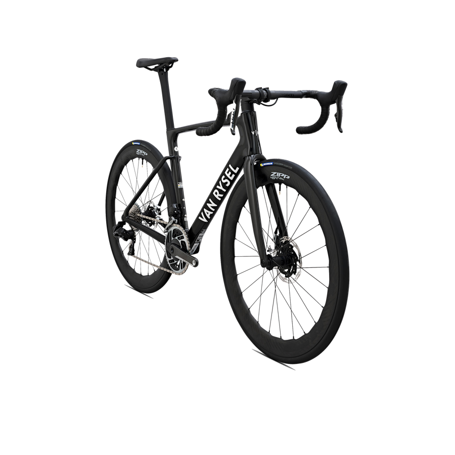
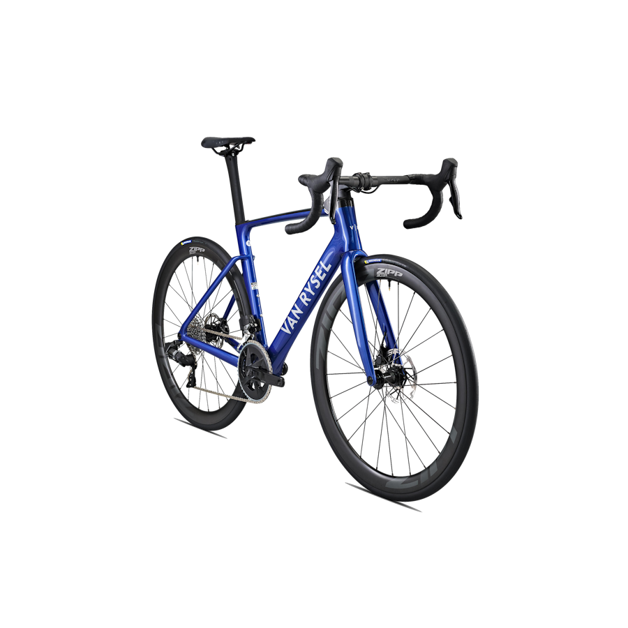
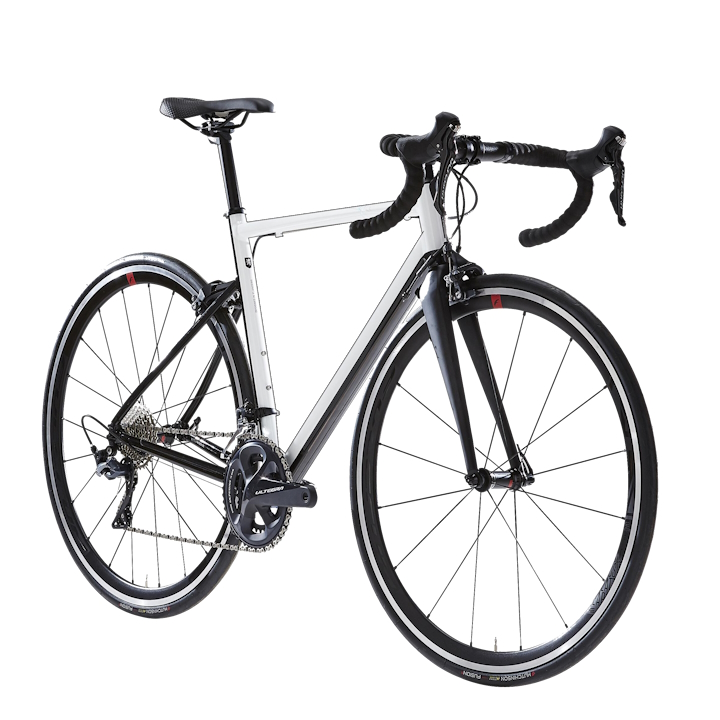
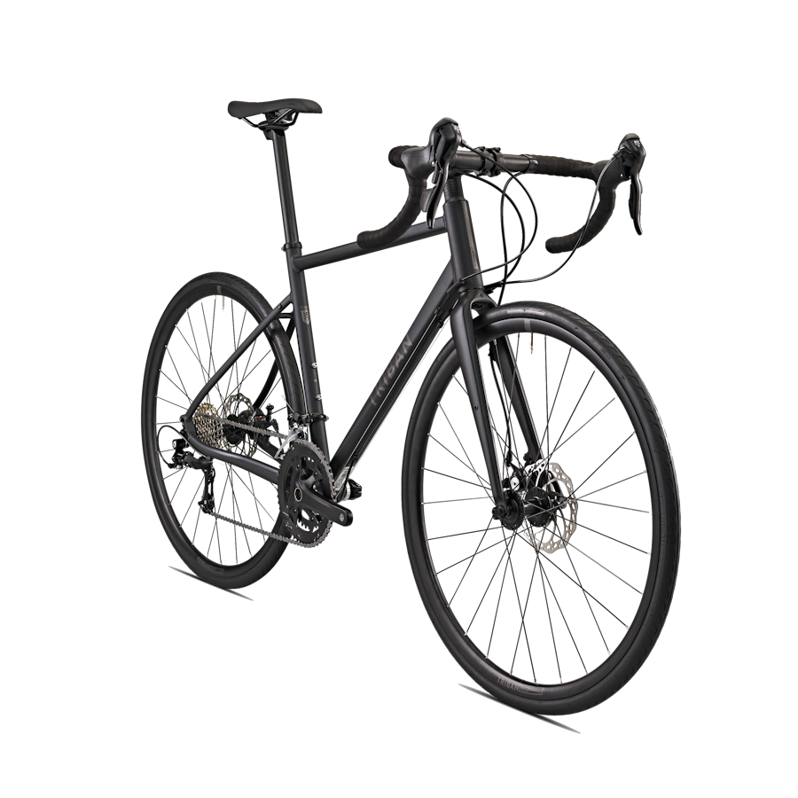

Aqui te enseñamos algunos modelos junto a su precio, que contendrán su enlace a la tienda donde puedes conseguirlas ademas de una breve descripción sobre ellas
RCR Pro Red Etap AXS Power
No hagas concesiones: esta bicicleta es la interpretación de la ecuación perfecta entre aerodinámica, ligereza y rigidez. Es la bicicleta más avanzada hasta la fecha, desarrollada y probada por aerodinamistas. Esta RCR PRO (para Racer) ha sido diseñada para corredores y corredoras con un objetivo en mente: ganar, sea cual sea la ruta, el desnivel y el ciclista que la recorra.
Por 8499,99 €
RCR Rival AXS
Nuestra mejor bicicleta a día de hoy, desarrollada y probada por aerodinamistas, es el perfecto equilibrio entre rendimiento puro y placer de conducción. RCR o RCR PRO, ¡tú eliges! Esta bicicleta ha sido diseñada para los ciclistas obsesionados por el aerodinamismo, la ligereza y la rigidez. RCR de RACER: lleva el ADN en su nombre.
Por 4199,99 €
Ultegra 11V Van Rysel EDR AF
Hermana mayor de la L EDR AF 105, conserva el cuadro 'endurance' de aluminio de grosor variable y, además, aporta la fiabilidad del grupo ULTEGRA y el aerodinamismo de las ruedas Fulcrum Racing Nuestra nueva bici de resistencia de aluminio te acompañará en tus salidas deportivas. La EDR AF ULTEGRA es una máquina que combina fiabilidad y rendimiento.
Por 1399,99 €
RC500 Microshift
Pedalea más lejos y con más frecuencia con nuestra bicicleta de carretera más cómoda que jamás hayamos fabricado. Descubre sus frenos de disco y su geometría específica. La práctica regular de la bicicleta por carretera.Comodidad sin igual para pedalear más lejos y con más frecuencia.
Por 689,99 €
